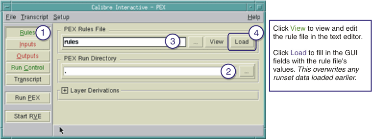

This section
describes the procedure used to specify a rule file for a PEX run.
Procedure
- Click Rules.
- Specify the run directory
name. Use the Browse (…) button to select
the run directory name from a list.
- Specify the rule filename.
Use the Browse button to select the rule filename from a list. Use
the View button to view or edit the rule
file.
- Click Load.
This loads GUI fields and sets GUI options based on rule file data.
Figure 1. Loading Rules in Calibre Interactive
Tip After
you load a rule file, any information you specify in the GUI supersedes
information in your loaded rule file.